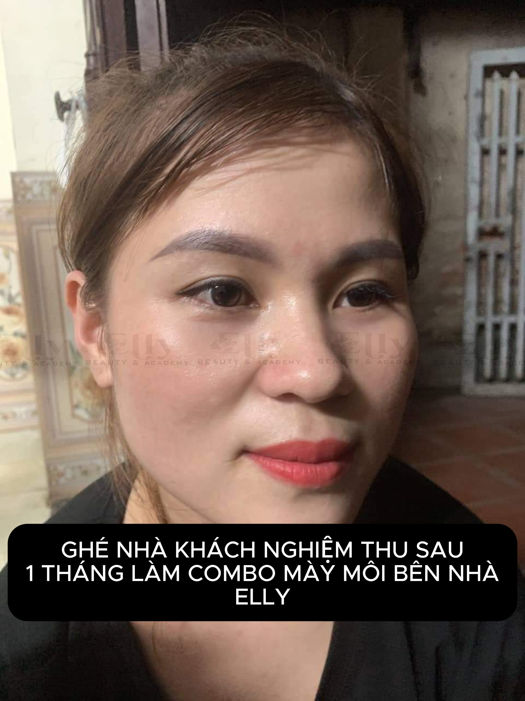

Khử Thâm Môi Uống Cà Phê Được Không? Giải Đáp Thắc Mắc Được Tìm Kiếm Nhiều Nhất
Đối với nhiều người, cà phê là thức uống quen thuộc mỗi sáng. Vì vậy sau khi thực hiện dịch vụ, câu hỏi khử thâm môi uống cà phê được không luôn nằm trong nhóm từ khóa được tìm kiếm nhiều trên Google.
Thực tế, chế độ chăm sóc sau khi khử thâm môi không chỉ liên quan đến việc dưỡng môi mà còn bao gồm cả thói quen ăn uống và sinh hoạt hằng ngày. Việc lựa chọn đồ uống phù hợp trong giai đoạn hồi phục sẽ giúp bạn yên tâm hơn và hạn chế những tác động không mong muốn.
Sau Khử Thâm Môi Uống Cà Phê Được Không?
Đây là câu hỏi không có một câu trả lời áp dụng cho tất cả mọi người. Trong thời gian môi đang hồi phục, điều quan trọng nhất là:
- Tuân thủ hướng dẫn của kỹ thuật viên.
- Theo dõi tình trạng môi.
- Giữ môi sạch.
- Dưỡng môi đúng cách.
Nếu bạn có thói quen uống cà phê mỗi ngày, hãy trao đổi trực tiếp với kỹ thuật viên để được hướng dẫn phù hợp với tình trạng của mình.
Vì Sao Nhiều Người Lo Lắng Khi Uống Cà Phê?
Nguyên nhân chủ yếu đến từ việc môi đang trong quá trình hồi phục. Nhiều khách hàng sợ rằng cà phê có thể làm môi lâu hồi phục, màu môi không đều hoặc ảnh hưởng đến kết quả.
Thay vì tự áp dụng các lời truyền miệng trên mạng, bạn nên làm theo hướng dẫn của cơ sở thực hiện.
Đừng chỉ tìm kiếm thông tin trên Internet. Hãy để kỹ thuật viên của ELLY PMU kiểm tra tình trạng môi và hướng dẫn cách chăm sóc phù hợp với cơ địa của bạn.
Sau Khử Thâm Môi Nên Uống Gì?
Để hỗ trợ quá trình hồi phục, bạn có thể ưu tiên uống đủ nước, bổ sung nước từ trái cây phù hợp và duy trì chế độ ăn uống cân bằng.
Nếu có bất kỳ băn khoăn nào về thực phẩm hoặc đồ uống, hãy hỏi trực tiếp kỹ thuật viên thay vì tự áp dụng các lời khuyên chưa được kiểm chứng.
Khử Thâm Môi Uống Trà Sữa Được Không?
Trà sữa thường có đường, sữa và topping nên có thể làm bạn khó kiểm soát vệ sinh môi trong giai đoạn đầu. Nếu môi còn nhạy cảm, nên ưu tiên đồ uống đơn giản hơn và tránh để thức uống dính trực tiếp lên môi.
Khử Thâm Môi Uống Nước Ngọt Được Không?
Nước ngọt không phải lựa chọn lý tưởng khi cơ thể cần đủ nước để hồi phục. Nếu muốn uống, bạn nên dùng lượng ít, giữ môi sạch sau đó và ưu tiên nước lọc trong những ngày đầu.
Khử Thâm Môi Kiêng Đồ Uống Gì?
Trong giai đoạn môi đang hồi phục, bạn nên cẩn thận với đồ uống quá nóng, quá lạnh, nhiều đường, có cồn hoặc dễ làm môi khô. Danh sách cụ thể có thể thay đổi tùy tình trạng môi và hướng dẫn sau khi làm.
Ngoài Cà Phê Còn Cần Lưu Ý Điều Gì?
Trong thời gian đầu sau khi thực hiện, bạn nên dưỡng môi theo hướng dẫn, không bóc lớp bong, hạn chế liếm môi, giữ môi sạch và tái khám đúng lịch.
Những Hiểu Lầm Thường Gặp
Chỉ Cần Kiêng Cà Phê Là Đủ
Chế độ chăm sóc sau khử thâm môi bao gồm nhiều yếu tố như vệ sinh, dưỡng môi, nghỉ ngơi và làm theo hướng dẫn của kỹ thuật viên.
Ai Cũng Phải Kiêng Giống Nhau
Tình trạng môi và cơ địa mỗi người khác nhau, vì vậy hướng dẫn chăm sóc cũng có thể khác nhau.
Đọc Trên Mạng Là Có Thể Áp Dụng Cho Mọi Người
Thông tin trên Internet chỉ mang tính tham khảo. Bạn nên ưu tiên hướng dẫn từ cơ sở đã thực hiện dịch vụ cho mình.
Checklist Sau Khi Khử Thâm Môi

Câu Hỏi Thường Gặp
Điều này phụ thuộc vào tình trạng hồi phục và hướng dẫn của kỹ thuật viên. Bạn nên trao đổi trực tiếp để được tư vấn phù hợp.
Một số trường hợp có thể được hướng dẫn sử dụng ống hút trong giai đoạn đầu. Hãy làm theo chỉ dẫn của cơ sở thực hiện.
Nếu bạn lo lắng về quá trình hồi phục, hãy liên hệ kỹ thuật viên để được hướng dẫn cụ thể thay vì tự xử lý.
Nên ưu tiên nước lọc và các lựa chọn nhẹ nhàng, ít đường, không quá nóng hoặc quá lạnh.
Mỗi đôi môi có cơ địa khác nhau. Một buổi tư vấn đúng sẽ giúp bạn biết cách chăm sóc phù hợp thay vì phải thử nhiều mẹo chưa được kiểm chứng.
Kết Luận
Khử thâm môi uống cà phê được không là câu hỏi rất phổ biến sau khi thực hiện dịch vụ. Thay vì chỉ quan tâm đến một loại đồ uống, bạn nên chú trọng chăm sóc tổng thể và làm theo hướng dẫn của kỹ thuật viên để môi hồi phục thuận lợi và đạt kết quả như mong muốn.